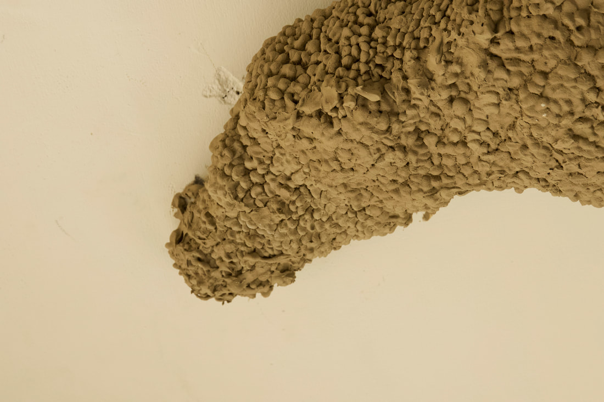
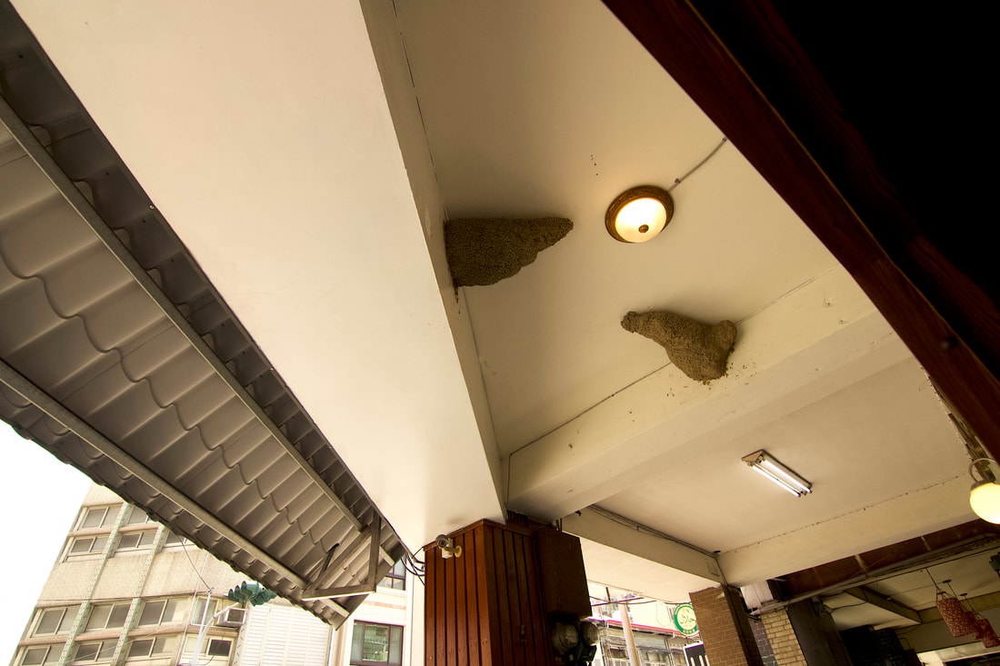
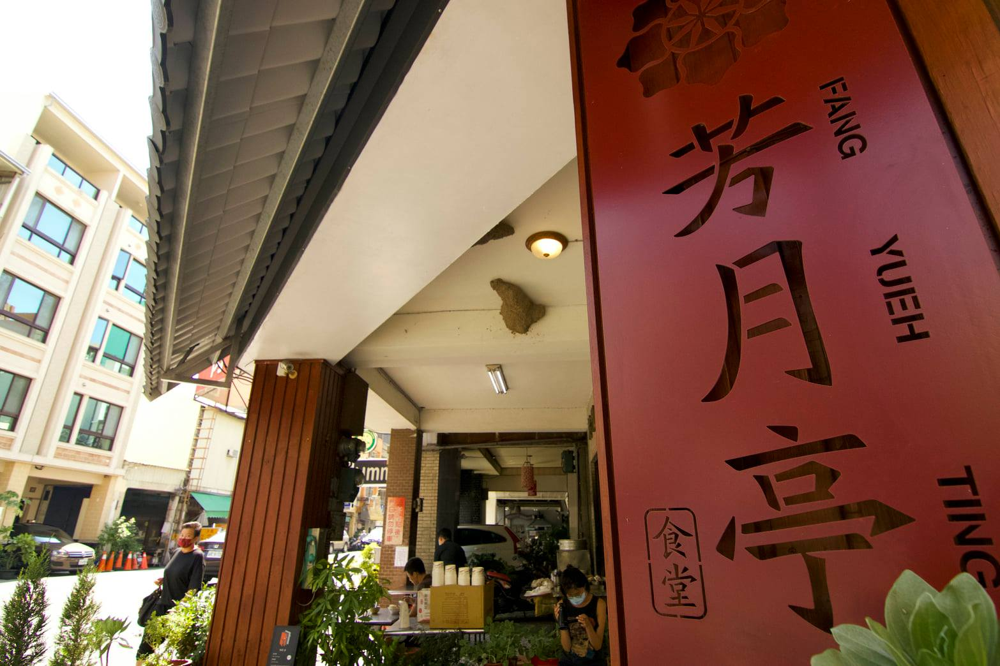

Yesterday, fly me to the moon
燕子常見於人類居所的屋簷結構下築巢，並隨著時序更迭進行游牧與遷徙，然而關於燕子的飛行路徑與記憶方式，至今雖有許多研究，但依然成謎。透過模擬巢穴的造型，製造出不同尋常的比例，展開對未知的生物、洞穴的想像。一個關於聲音的洞穴/巢穴，突發的噪音或是荒野的聲響交織錯落於現場，聲響與現場環境音交疊、互動，試圖牽引觀眾的身體感穿梭至錯置的時空場域，在聲響的中斷時刻能夠意識到經驗的當下。


